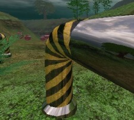
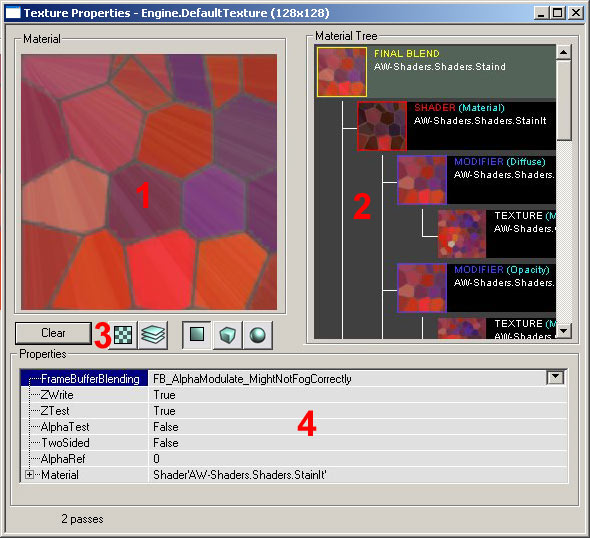
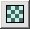
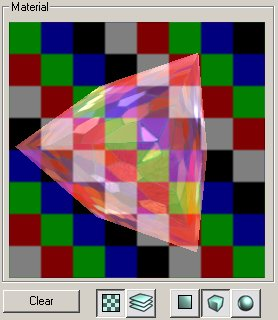
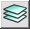
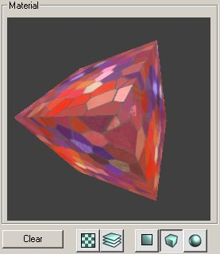
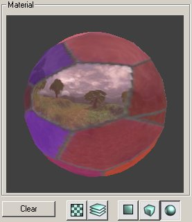

UDN
Search public documentation:
MaterialTutorialJP
English Translation
한국어
Interested in the Unreal Engine?
Visit the Unreal Technology site.
Looking for jobs and company info?
Check out the Epic games site.
Questions about support via UDN?
Contact the UDN Staff
한국어
Interested in the Unreal Engine?
Visit the Unreal Technology site.
Looking for jobs and company info?
Check out the Epic games site.
Questions about support via UDN?
Contact the UDN Staff
マテリアル
本書の概要: マテリアル ブラウザの紹介と異なるシェーダーの目次 本書の変更記録: Jason Lentz (DemiurgeStudios)により最終更新｡文書をより管理しやすい量に分割｡原作者Lode Vandevenne (UdnStaff)はじめに
マテリアルは、テクスチャを修正することによりあらゆる特殊効果を得られます｡ここでは異なったマテリアルのクラスの使用方法および、マテリアルを使って様々な効果を作成する方法について説明します｡マテリアルは一見扱いにくく見えますが、一度その使用方法を覚えるととてもパワフルなツールです｡
 以下はマテリアルのプロパティの詳細と、あらゆる種類のマテリアルの説明へのリンクです｡
以下はマテリアルのプロパティの詳細と、あらゆる種類のマテリアルの説明へのリンクです｡
マテリアル ブラウザの使用
マテリアル ブラウザを表示するには、テクスチャ ブラウザ内のテクスチャを右クリックし、プロパティのオプションを選択します｡次のようなものが表示されます（それぞれの項については以下で説明）：
1 Material Window （マテリアル ウィンドウ）- マテリアルで選択したマテリアルを表示します 2 Material Tree （マテリアル ツリー）- すべてのマテリアルをツリーで表示します｡ツリー内の各マテリアルのプロパティを選択できます 3 Material Display Buttons （マテリアル表示ボタン）- マテリアル ウィンドウ内の表示を変更するためのボタンです｡ ボタンには効果はありません
ボタンには効果はありません

- このボタンは、テクスチャの背後に格子柄のMaterialBackdrop(マテリアル バックドロップ)テクスチャを表示します

- このボタンを押すと合成されたマテリアル（マテリアル ツリーの最上部のマテリアル）が表示されます｡押さない場合は、選択されているマテリアルが表示されます ,
,  ,
,  - これら3つのボタンは、マテリアル ウィンドウ内のテクスチャをフラット テクスチャ、キューブ上のテクスチャ、球上のテクスチャとして表示します｡下は、上記マテリアルのCube（キューブ）およびSphere（球）表示モードです。
- これら3つのボタンは、マテリアル ウィンドウ内のテクスチャをフラット テクスチャ、キューブ上のテクスチャ、球上のテクスチャとして表示します｡下は、上記マテリアルのCube（キューブ）およびSphere（球）表示モードです。


4 Properties （プロパティ）- マテリアル ツリーのテキスト バージョンで、ツリー内の各マテリアルのプロパティをここで変更できます｡マテリアル ツリー ウィンドウで選択しているマテリアルにより、プロパティの内容も変わります｡新しいマテリアルの作成
新しいマテリアルを作成するには、テクスチャ ブラウザに戻りファイル メニューから[New]（新規作成）を選択します｡[New Material]（新しいマテリアル）ウィンドウが表示されます｡このウィンドウで適宜にパッケージ、グループ、名前を設定し、どのようなマテリアルを作成するかを決定します｡ MaterialClasses（マテリアル クラス）には、たくさんの種類のマテリアル クラスがあります。[Class]（クラス）メニューからは[Raw Material]（未加工マテリアル）および[Real-time Procedural Texture]（リアルタイム手続き型テクスチャ）を選択できますが、このセットは[Raw Material]に設定しておきます｡次のセクションでは様々な種類のMaterialClassを詳細に説明し、それぞれの文書へのリンクも紹介します｡
MaterialClasses（マテリアル クラス）には、たくさんの種類のマテリアル クラスがあります。[Class]（クラス）メニューからは[Raw Material]（未加工マテリアル）および[Real-time Procedural Texture]（リアルタイム手続き型テクスチャ）を選択できますが、このセットは[Raw Material]に設定しておきます｡次のセクションでは様々な種類のMaterialClassを詳細に説明し、それぞれの文書へのリンクも紹介します｡
Raw MaterialClass（未加工マテリアル）
Raw MaterialClassは最もよく使うもので、サブクラスも数多く備えられています｡これらのサブクラスは説明の便宜上5つのカテゴリーに分けられています（下記参照）。サブクラスの多くはここには含まれていないことにご注意ください｡それらはもはや機能していないか、レベル デザイナー向きではないためです｡ Unreal Ed では異なるマテリアルをそれぞれ違うクラスに分け、テクスチャ ブラウザ内でもこれを区別します｡以下はテクスチャ ブラウザでグループ化された異なる種類のマテリアルです： [Filter]（フィルター）のメニューを使用すると、特定の種類のマテリアルを概観することができます｡
下は、色付の縁取りがあるRaw MaterialClassの説明です｡すべてのクラスに縁取りがあるわけではありません。
[Filter]（フィルター）のメニューを使用すると、特定の種類のマテリアルを概観することができます｡
下は、色付の縁取りがあるRaw MaterialClassの説明です｡すべてのクラスに縁取りがあるわけではありません。
| Raw Material Class | 説明 | 縁取り |
|---|---|---|
| Texture | ノーマルのテクスチャか、「Procedural Textures」（手続き型テクスチャ）です。他のすべてのマテリアルはビルドのベースとしてノーマルのテクスチャを使います｡ | なし |
| Shaders | テクスチャにOpacity（不透明）、Specularity（反映性）、SelfIllumination（自光性）などの効果を与えます｡ |  |
| Modifiers | 他のマテリアルやテクスチャに特定の修正を与えます｡例えば、TexRotate]（テクスチャの回転）マテリアルはテクスチャを回転させ、TexScaler（テクスチャ スケーラー）はテクスチャのスケールを変更します｡ | |
| CubeMaps | 6つのテクスチャを用いてキューブ状に配列します｡EnvironmentMaps（環境マップ）の作成に使用されます。 | |
| Combiners | 2つのマテリアルを選択した用法で組み合わせます｡ |  |
| FinalBlends | 合成されたマテリアルまたはテクスチャに半透明性、暗くする、アルファ ブレンディングといった簡単な効果を与えます｡ |  |
Shader (シェーダー)
MaterialsShader 最もよく使われるマテリアル クラスです。ここではShaderマテリアル クラスについて説明します｡Shaderでは、異なるテクスチャを同時に用いて簡単な効果を与えることができます。Modifier
MaterialsModifier このマテリアル クラスではテクスチャに特定の修正を加え、ベース テクスチャに標準でない修正をすることができます。ここで説明されているサブクラスは、ColorModifier（カラー モディファイヤ）、ConstantColor（一定カラー）、TexEnvMap（テクスチャ環境マップ）、TexOscillator（テクスチャ オシレーター）、TexPanner（テクスチャ パナー）、TexRotator（テクスチャ ロテーター）、TexScaler（テクスチャ スケーラー）です。Combiner (コンバイナ)
MaterialsCombiner コンバイナ マテリアル クラスは2つのマテリアルを組み合わせて3つ目を作成するのに使います｡コンバイナを使うと、複雑なレイヤ－効果をあげるために入り組んだマテリアル ツリーを作成できます｡CubeMaps および TexEnvMaps
MaterialsEnvironmentMaps CubeMap(キューブ マップ)およびTexEnvMaps(テクスチャ環境マップ)のマテリアル クラスを使って、環境マップを作成する方法を説明します｡FinalBlend
MaterialsFinalBlend FinalBlend(ファイナル ブレンド)マテリアルはテクスチャにブレンド効果を与えます｡ここではこのマテリアルのサブクラスを使う方法を説明した文書にリンクしています｡マップの用例
 数多くの異なる複雑なマテリアルの用例マップについては、この文書をご覧ください：
ExampleMapsEPIC#Materials_Example_Map （用例マップはこのページの一番最後です）
数多くの異なる複雑なマテリアルの用例マップについては、この文書をご覧ください：
ExampleMapsEPIC#Materials_Example_Map （用例マップはこのページの一番最後です）